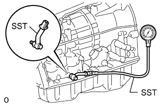

DTC P0781 1-2 Shift (1-2 Shift Valve) |
| DTC Code | DTC Detection Condition | Trouble Area |
| P0781 |
(b) When the ECM directs the transmission to switch to 4th gear, the actual gear is shifted to 3rd. (c) When the ECM directs the transmission to switch to 5th gear, the engine overruns (clutch slips). |
|
| ECM gear shift command | 1st | 2nd | 3rd | 4th | 5th | 6th |
| Actual gear position under malfunction | 1st | 1st | 3rd | 3rd | N* | N* |
| Gear position under normal conditions | 1st | 2nd | 3rd | 4th | 5th | 6th |
| Actual gear position under fail-safe mode | 1st* | 1st* | 3rd | 3rd | 3rd | 3rd |
| 1.CHECK DTC OUTPUT (IN ADDITION TO DTC P0781) |
Connect the intelligent tester to the DLC3.
Turn the engine switch on (IG).
Turn the intelligent tester on.
Enter the following menus: Powertrain / Engine and ECT / DTC.
Read the DTCs using the tester.
| Result | Proceed to |
| Only P0781 is output | A |
| P0781 and other DTCs are output | B |
|
| ||||
| A | |
| 2.PERFORM ACTIVE TEST USING INTELLIGENT TESTER (RUNNING TEST) |
Warm up the engine.
Turn the engine switch off.
Connect the intelligent tester to the DLC3.
Turn the engine switch on (IG).
Turn the intelligent tester on.
Enter the following menus: Powertrain / Engine and ECT / Active Test.
According to the display on the tester, perform the Active Test.
| Tester Display | Test Part | Control Range | Diagnostic Note |
| Control the Shift Position | Operate shift solenoid valves and set each shift position |
| Possible to check operation of the shift solenoid valves. [Vehicle Condition] 50 km/h (30 mph) or less |
| Tester gear shift command | 1st | 2nd | 3rd | 4th | 5th | 6th |
| Actual gear position under malfunction | 1st | 1st | 3rd | 3rd | N* | N* |
|
| ||||
| OK | |
| 3.PERFORM ACTIVE TEST USING INTELLIGENT TESTER (SHIFT SOLENOID VALVE SLT) |
|  |
Remove the test plug from the transmission case and connect SST.
Connect the intelligent tester to the DLC3.
Start the engine and warm it up.
Measure the line pressure with SST.
Turn the intelligent tester on.
Enter the following menus: Powertrain / Engine and ECT / Active Test.
According to the display on the tester, perform the Active Test.
Measure the line pressure.
| Tester Display | Test Part | Control Range | Diagnostic Note |
| Activate the Solenoid (SLT)* | Operate shift solenoid valve SLT and raise line pressure | ON or OFF
| [Vehicle Condition]
|
|
| ||||
| OK | |
| 4.CLEAR DTC AND PERFORM RUNNING TEST |
Clear the DTC (Click here).
Check for the DTC again after conducting the Monitor Drive Pattern (Click here).
|
| ||||
| OK | ||
| ||